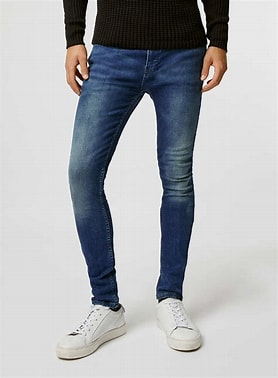

Skinny Fit
Skinny fit jeans are tight-fitting from the waist down to the ankle. They are perfect for those who want a modern, trendy look. Skinny jeans go well with high-top sneakers and boots.
Skinny fit jeans are tight-fitting from the waist down to the ankle. They are perfect for those who want a modern, trendy look. Skinny jeans go well with high-top sneakers and boots.
Slim fit jeans are narrower than regular fit jeans but not as tight as skinny jeans. They are fitted through the thigh and leg and have a narrower leg opening. These jeans are versatile and can be worn with a range of footwear.
Straight fit jeans have a straight leg from the hip down to the ankle. They are a classic and timeless style, suitable for almost all occasions. They look great with sneakers or dress shoes.
Bootcut jeans are fitted through the thigh and flare out slightly at the knee, creating a boot-like shape. They are great for those who want a bit more room in the leg, and look best with boots or chunky shoes.
Relaxed fit jeans are loose-fitting from the waist down to the ankle. They are great for those who want a comfortable, laid-back look. They look best with sneakers or casual shoes.